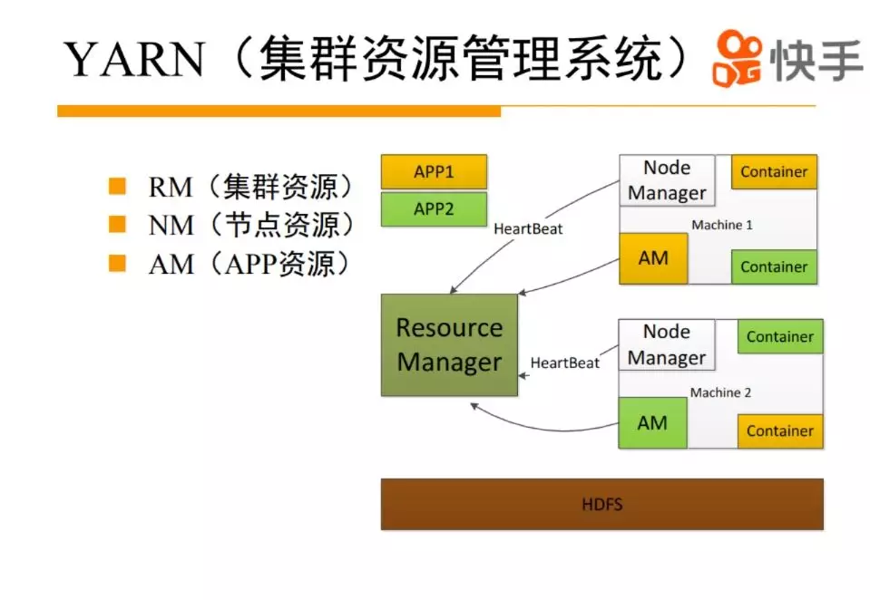
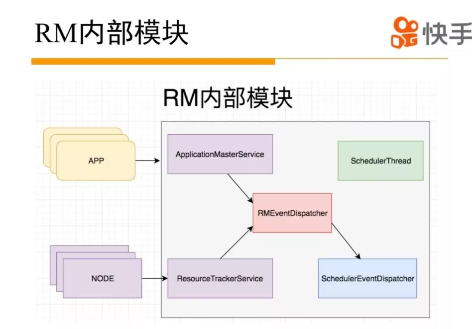
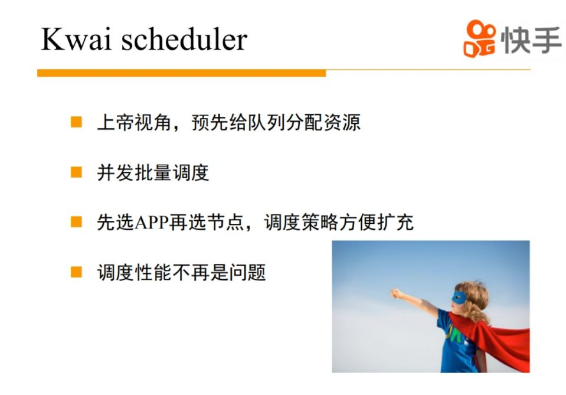

本文主要分为三部分：yarn的背景、 yarn技术改进、 yarn未来规划。
yarn背景
yarn大家都比较熟悉了，是从Hadoop1.0分离到2.0的比较重要的特性，把原来的jobtracker集中式调度变成yarn的二级调度，解决集群扩展性的问题。yarn主要是分成了三个模块，ResourceManager来管理整个集群的资源，NodeManager管理整个机器资源情况，ApplicationMaster管理整个APP的资源信息。MR/SPARK/Flink实现了自己的AM逻辑在yarn上运行。

接下来介绍一下yarn的RM模块。yarn的RM模块按照功能可以分成两部分：集群状态管理和资源分配。RM内部通过ResourceTrackerService和ApplicationMasterService 负责NM和APP的通信交互。服务内部会生成相应的事件交给内部的事件处理器处理。驱动NM和APP状态机的运行，确保APP和NM处于合适的状态。调度通俗的讲就是把节点的空闲资源分配给需要的APP。社区早期版本的yarn是在心跳逻辑里面触发整个调度逻辑的，这里面有一个问题，调度过程会跟整个事件处理的竞争资源，导致两方相互影响，性能不高，后来yarn社区做了优化，把整个调度逻辑拆离，放到单独线程来做。

yarn在快手的应用特点
yarn在快手是非常典型的大数据的应用栈，yarn上面服务了一些经典的离线计算，像HiveSQL，最终回变成一个MR／SPARK作业或者PESTO查询在yarn上运行。对于流式的实时数据处理需求，我们上层有一个青藤平台来托管FLINK在YARN上运行。对于模型训练的场景，我们是用XLearning作为调度器，调度TensorFlow，XGBoost，MPI等训练学习引擎。基于Spark和XLearning，我们打造了亚瑟机器学习平台，可以把数据处理流程和一些模型的训练、预测流程做一个打通，方便用户使用。

yarn技术改进
1. yarn技术实践和演进
对yarn的一些改动，主要分成四个方面：（1）集群稳定性方面的优化。（2）对yarn的抢占机制做了优化。（3）yarn的调度性能提升。（4）计算集群小IO优化。

2.整个集群变大以后，对yarn调度系统来说面临什么问题?
直观的感觉来说，整个集群变大，节点就变多了，running的APP也会增多。节点和APP增多会导致RM对外服务压力变大，事件处理逻辑增多，事件处理压力会比较大，并且对增加整个调度的压力。因为你有很多的APP需要请求资源，你整个资源池又非常大，所以整个调度压力是非常大的，怎么解决这个压力的问题。还有整个状态变化会非常多，这时候会有一些事件处理，在yarn原生的框架里面，事件处理是单线程的，会有各种各样的问题，整个事件处理压力非常大。针对这些问题我们做了一些针对性的优化。在大集群里面，机器故障会变得越来越频繁，怎么应对机器故障对整个作业稳定性造成的影响，这也是比较重要的方面。

3.在RM方面做的一些优化
从几个比较经典的Case来说一下。有一次我们升级整个集群的时候，导致整个集群挂掉，一次升级几百个机器，直接导致RM事件雪崩，最终OOM掉。我们发现是RM和NM交互有一些冗余事件的，我们对冗余事件进行了一些优化。对于NM，我们设计了一个慢启动的策略，如果NM刚启动没有必要维持每秒汇报一次，开始可以20秒汇报一次，下次10秒，下次5秒，最终恢复到正常，这样会把整个RM的事件处理压力降下来，最终升级集群对RM基本没什么影响。最终升级瓶颈变成了我们的运维系统，不能并发升级太多机器。
HDFS是yarn非常底层的基础设施，ResourceManager事件处理逻辑中有一些HDFS操作，HDFS卡一下，会造成整个事件处理逻辑卡住，最终整个集群卡住。分析发现RM对HDFS的操作主要集中在失败APP的处理，不是非常核心的逻辑，解决方案也比较简单粗暴，把HDFS的操作从同步改成异步。我们还对整个yarn事件处理逻辑进行排查，发现有一些像DNS的操作，在某些情况下也会比较卡，我们就把这种比较重IO的操作进行相应的优化，确保事件处理逻辑中都是快速的CPU操作，保证事件处理的高效和稳定。
经过优化之后，我们发现在集群规模比较大的时候，事件处理过程还是要消耗非常多的CPU，我们profile发现，大部分的CPU的消耗是处理NM节点信息的汇报，RM事件处理主要分几个部分，有一些是节点级别的，有一些是APP级别的，有一些调度级别的。NM级别跟其他的是没有太必要放在同一个线程处理，我们把它抽离出来，放在一个额外的线程上，这样把大部分处理迁出去了，让整个事件处理逻辑变得比较轻量。
2.6之后yarn支持状态恢复，RM重启理论上对APP是没有影响的，可以把APP恢复出来，但是还是有一些比较小的缺陷，会造成APP的失败，比如没有把一些异常cover住，抛到AM，导致AM挂掉，token恢复在一些场景下也有问题。我们的RM升级是非常频繁的，基本上2天左右就会升级新版本，集群上有一些非常重要的作业，所以失败，对他们造成的影响会比较大。

4.在从节点上面怎么避免单点问题
yarn社区本身是有一个磁盘的故障监测机制的，基本的思路也会定期在磁盘上创建目录，如果能创建成功说明这个磁盘是OK的，如果失败就认为你这个磁盘有问题，这个比较简单有效。但是在某些特定场景下，会有一些奇怪的磁盘问题，比如整个磁盘是好的，但是某个目录是坏的，可能会导致某些特定的作业失败。我们扩展了NM磁盘的黑名单功能，通过container的失败信息做一些规则匹配，这样可以定向发现一些磁盘问题，把疑似有问题的磁盘放在黑名单里面，不再向这个磁盘调度作业。
yarn有一个比较大的问题，如果你有一台机器有问题，造成一些container调度失败，并且系统没有捕获的话，会造成雪崩效应，比如一批container启动失败了，这台机器资源看起来非常空闲，然后RM发现机器空闲，就调动更多container上来，然后越来越多的container失败，最后导致很多APP运行失败。社区提出了AM的黑名单机制，主要来解决AM的失败问题，如果AM大量失败，不往这台机器上调度AM，APP内部依赖自己的黑名单机制，发现这些问题机器。我们觉得这样可能会造成很多无效的container失败，所以我们的解决思路是建立整个集群的黑名单，而不单独是AM的黑名单。当我们通过一些规则发现有大量的container在某一台机器失败，或者这台机器的container调度速度非常异常，我们会把这台机器放到我们集群的黑名单里面，不再向这台机器调度资源。
资源隔离方面，现在社区主要是用cgroup做一些内存和CPU的隔离，其他方面的隔离非常弱的，我们当时碰到一些场景比如磁盘打满了，FD泄露、线程泄露的问题。曾经在上一家公司的时候写过一个程序，有线程泄露的问题，泄露之后把整个机器的线程全用光了，这样导致这个机器所有服务异常，计算框架计算不断把这个问题task调度到其他机器上，最终把整个集群都打挂了。解决方案就是对container的线程数目，磁盘大小定期检查，如果超过阙值，直接kill掉。
单台机器的故障率比较低，但集群规模变大之后，整体故障率变得非常高。怎么发现这些机器是个问题。我们借助container失败率做一个基本的判断。如果是一台机器失败率高于正常值，可能是非常有问题的，需要人工检查一下。还可以借助一些物理指标的异常检测，因为在离线系统里面，CPU打得比较高的，load也比较高，所以当前这些指标可能不容易发现，用syscpu作为异常检测指标，集群中经常有些机器task跑的比较慢，重启机器就好了。一台机器有问题会导致Task失败，Task失败会导致作业的失败，我们做了一个失败APP的归因系统，可以从归因系统里面发现一些问题机器。单纯从作业失败还不够，我们正在做一个基于失败TASK的归因系统，因为TASK有容灾重试机制，可能会掩盖潜在问题。

5.yarn调度方面做的优化
yarn一个主要的功能，就是要调度整个集群的资源，它的视角是整个集群的节点信息，还有APP的资源请求信息，还有一些队列信息。yarn的调度模型里面，逻辑是比较复杂的， 简单说，先来一个节点，如果这个节点有一定资源的话，会对集群中的一级队列做排序，然后选出最应该调度的队列。选择这个队列之后找这个队列下面的二级队列进行排序，逐渐递归找到APP，选一个合适的APP进行调度，如果资源调度不上，再找下一个APP。调度逻辑是要耗费很大资源的，主要是各种排序。但整个排序真的有这么大必要吗？

我们早期思路就是怎么减少整个排序的时间，减少排序时间从三方面着手，减少排序规模，减少单次排序时间，优化排序算法。如何减少排序规模？集群里有几千个队列，几千个队列是不是都需要资源？APP是不是都需要资源，是否都需要排序？实际场景中大部分是不需要资源和参与排序的，这样把整个排序规模减小了。在调度单词排序时，使用了java.collection.sort()函数排序的，每次排序涉及到两个元素的compare，怎么来减少compare的开销？在yarn里面每一次compare的时候有很多可以可以优化的地方，比如计算一个队列使用的资源量，有一些临时对象可以cache住，最终缩小整个单次排序的时间。Collection.sort底层使用归并排序，我们改成堆排序，经过这些优化后，差不多能够支撑5000台机器的规模。

优化之后还是存在一个很明显的问题，调度的扩展性是不足的，因为整个排序过程都是在一个CPU里面，如果想利用更多CPU，会涉及到整个排序怎么切分，节点怎么切分、作业怎么切分，怎么让资源分配达到均衡，怎么保证公平性，涉及到非常复杂的策略，非常难拆分。yarn调度是先选一个节点，然后再选APP，调度过程只看到一个节点的信息，而看不到整体的集群信息，整个调度策略是非常受限，很难加一些策略在里面。比如yarn本地化一个非常简单的功能实现上比较复杂，在整个调度框架层面。如何来解决这个问题？

最终决定我们重写调度逻辑，开发了Kwaischeduler。我们觉得在整个集群里面有一个上帝视角的，你可以拿到整个集群的资源使用情况和资源配置情况和每一个队列、每个APP的资源需求量和资源的配置。基于这些信息，我们能够计算出来，应该给每一个APP来分配多少资源。然后App资源的分配过程我们完全可以并发起来，借助多线程的能力，去整个资源池里面抢这些资源。因为我们是先调度APP的，所以抢这些资源的时候，借鉴K8S的调度思路，先对节点进行过滤，然后按照不同的调度策略，给每个节点打分，每个策略可以有一个权重，从理论上来说每个APP都可以有自己的策略。Kwai scheduler上线后调度性能和调度策略扩展性不是问题，现在单集群的调度性能可以达到每秒钟4万多container，对比国内其他厂商和社区，我们的调度性能和扩展性上表现还不错。

简单介绍一下底层实现。首先主要分成两部分，一部分是集群资源的预分配过程，把一些资源分配到每个APP，第二部分是APP怎么去每台机器上竞争资源。有一个单独线程定期会对集群情况做snapshot，基于snapshot来做一个上帝视角的资源分配。我们为每个APP分配出资源之后，就可以把APP丢到线程池里面并发抢资源，对相应的节点排序，选出分数最高的节点，最终你会有一个commit的过程，真正拿到资源。整个调度分配结束后，会把整个分配结果写回到整个原生的yarn框架。

在计算集群里面有一个大的问题，就很多的小IO。在我们业务场景里面，快手的数据规模比较大比较大，经常是几十万个map，几千reduce。一个map也没有多少数据，可能就是250M，reduce单次shuffle取的数据非常小的，可能只有几K几十K，所以有很多的小IO，导致整个集群磁盘util非常高，但是磁盘读写速度非常慢。针对这个问题，我们对MR的shuffle过程做一个Cache。在shuffle过程中，当一个请求来的时候，我们分析一下这次shuffle过程有没有可能产生比较多小IO，可以按需把shuffle数据放到cache里，只需要一次大的IO把数据搬到Cache里面，后面的shuffle请求可以直接从cache里面读，消灭了后面多次小IO，通过这个我们优化，提升了整个的集群IO性能。

yarn为什么有抢占的问题，为什么K8S这些在线系统不会有抢占问题。yarn主要是离线调度系统，资源使用不像在线系统比较恒定，有一些突增，这意味着如果完全资源配额限制资源，会导致整个集群的资源利用率降低或者job的运行时间拉长。所以yarn允许你的资源使用超过配额。这带来另一个问题，使用超过配额后，当另一个队列需要资源的时候，能不能及时把这些资源释放出来。在大部分情况下是可以的，因为离线系统的作业一般会比较快的结束。但是在特殊场景下，有可能是一个spark作业一直占着资源不释放，可能会导致一些比较核心的作业拿不到资源。抢占主要是解决这个问题。但是在大部分的公司，抢占是没有打开的，原因主要因为社区版本的抢占不太可控。会基于队列的资源使用量来决定是否抢占，如果核心队列资源使用超过配额太多， 可能会被非核心队列抢占，存在比较大的风险。我们解读这个问题的思路是基于一些核心队列来触发的抢占，抢占只能从核心的队列触发，被抢占的只是非核心队列，这样就解决低优先级作业抢占核心的作业问题。但是这个方案还是有些问题，如果使用资源超过配额的都是一些核心的作业，这时候怎么处理？我们主要思路是，希望构建整个集群的作业优先级体系，把作业重要性系统做一个全局拉起，这样我们可以做一些队列内部的抢占和跨核心队列之间的抢占。

yarn的未来规划
构建作业分级保障，现在我们yarn的集群规模比较大，大家使用的资源都非常多，但是这些资源有没有用到真正比较重要的业务上，其实我们是有些疑问的，有多少无效的计算在里面，当然这个涉及到业务层的优化。为作业打一些作业的标签，基于这些任务的标签，以及优先级的特性，刻划整个集群资源的使用情况，为预算或者其他的技术方案提供一些技术的底层支持。
我们现在单个yarn集群规模在国内是top级的，但是单集群毕竟是容量有限，我们后面会考虑多集群建设的方案，社区的federation方案在跨IDC方面有些问题，如何在业务透明的前提下，建设跨IDC集群有非常多问题需要解决。

yarn现在主要托管的是一些离线计算的资源，公司还有很多空闲资源没有使用，怎么来使用这些空闲资源，怎么做到把一些合适的任务调入到一些比较空闲的机器上，当这个机器需要的时候，及时把任务迁移走，怎么减少业务相互的影响，底层这方面需要做什么支撑，这都需要探索。